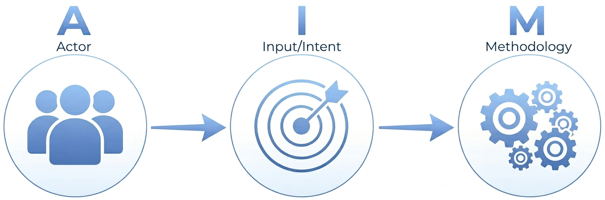
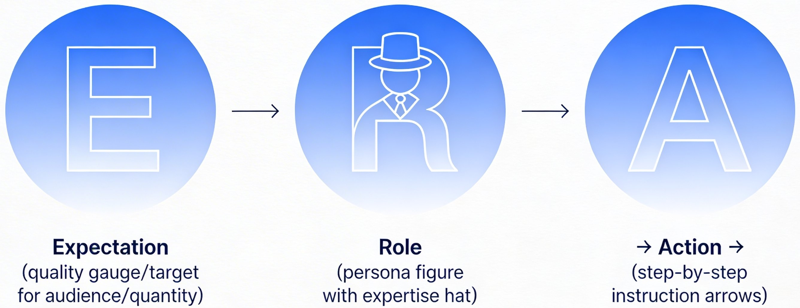
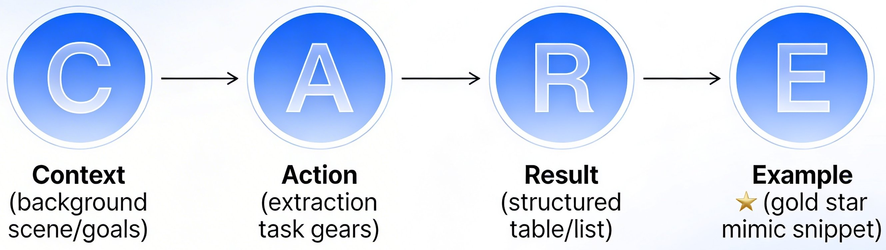
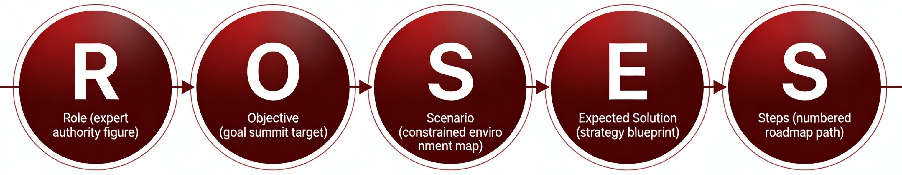
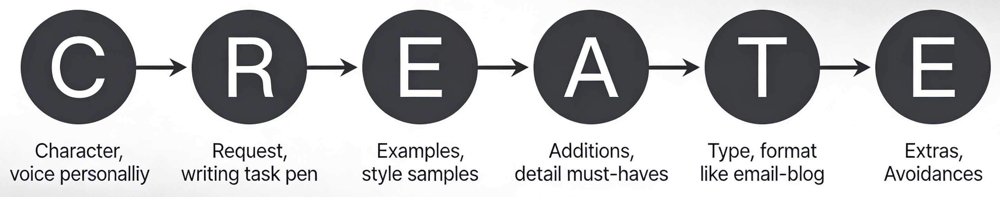

Remark
Please be aware that these lecture notes are accessible online in an ‘early access’ format. They are actively being developed, and certain sections will be further enriched to provide a comprehensive understanding of the subject matter.
2. Prompt Engineering Fundamentals#
Learning Objectives
By the end of this section, you will:
Apply the AIM framework to structure effective prompts
Select appropriate frameworks for different tasks
Design prompts with clear constraints and examples
Evaluate and refine prompts iteratively
2.1. What Is Prompt Engineering?#
Prompt Engineering is the art and science of crafting effective instructions that guide LLMs toward focused, usable output for real academic tasks [Chen et al., 2025, Debnath et al., 2025].
2.1.1. Why Vague Prompts Produce Weak Results#
Large language models respond directly to the level of specificity in the instruction provided. When prompts are underspecified, the model must infer intent, scope, audience, and format. These assumptions often lead to output that is overly general, misaligned with the task, or methodologically imprecise.
For example:
Vague prompt: “Write a summary.” This instruction does not define length, purpose, audience, or evaluative criteria. The resulting output is likely to be generic and shaped by default model assumptions rather than user intent.
Structured prompt: An engineered prompt specifies the target audience, analytical objective, scope of content, and output format. This reduces ambiguity and increases alignment between the instruction and the result.
The difference is not stylistic but methodological. Effective prompts reduce interpretive freedom and constrain the model toward a defined analytical task.
2.2. The AIM Framework#
AIM is a simple, general‑purpose structure you can use for most academic tasks. It forces you to answer three questions before you ask the model for help: Who is this for? What are you trying to do? How should the response look? When you fill in those pieces, the model has far less room to guess—and your outputs become sharper and more usable [theMITmonk, 2023].
A — Actor or Audience: Who is this for? (you, your students, reviewers?)
I — Input or Intent: What exactly are you trying to accomplish?
M — Methodology: How should the model respond? (format, length, tone, constraints)
{kind=link}

Fig. 2.1 Visual overview of the AIM framework: aligning audience, intent, and methodology to produce sharper prompts. (Image generated using Google Gemini).#
Example 2.1 (Literature Analysis)
❌ Before:
“Edit this paragraph.”
✅ After (AIM):
Audience: You are an academic journal reviewer in environmental science.
Intent: Strengthen clarity and coherence of this paragraph for an international journal audience.
Methodology: Preserve technical meaning, keep citations, and highlight any unclear claims in brackets instead of changing them.
2.3. Framework Selection Guide#
Once you understand the basic idea of prompt engineering, the next question is: Which structure should you use for which task? Different frameworks shine in different situations—quick tasks, deep synthesis, long‑range planning, or high‑stakes writing.
Here are a few frameworks that work well for academic teaching and research:
Framework |
Best For |
Components |
|---|---|---|
AIM |
General purpose |
Audience, Intent, Methodology |
ERA |
Quick tasks |
Expectation, Role, Action |
CARE |
Synthesis |
Context, Action, Result, Example |
ROSES |
Planning |
Role, Objective, Scenario, Solution, Steps |
CREATE |
Writing |
Character, Request, Examples, Additions, Type, Extras |
2.3.1. ERA: Speed and Simplicity#
The ERA framework [Juuzt AI, 2026] is the “Swiss Army Knife” of prompting. It is designed for efficiency, ensuring that the AI knows exactly who it is, what it needs to do, and how the final result should look. This prevents the “vague-in, vague-out” problem common in AI interactions.
Expectation: Defines the quality, quantity, and audience of the output.
Role: Sets the “persona” or expertise level to ensure the tone is appropriate.
Action: Provides the specific instructions or steps the AI must execute.
{kind=link}

Fig. 2.2 Visual overview of the ERA framework: expectation, role, and action working together to produce focused responses. (Image generated using Google Gemini).#
Example 2.2 (Quiz Generation)
Expectation: 5 multiple-choice questions on photosynthesis, written for a first-year university level.
Role: A science educator who focuses on critical thinking rather than simple memorization.
Action: Generate 5 questions on light-dependent reactions. Provide 4 options per question and an answer key that explains why the correct choice is right and why common mistakes are wrong.
The beauty of ERA is that it works just as well for administrative tasks as it does for complex subjects. By defining the Role and Expectation, you prevent the AI from sounding too robotic or overly “chatty.”
Example 2.3 (Professional Email Drafting)
Expectation: A concise, 3-sentence email to a project manager requesting a deadline extension.
Role: A dependable team member who is transparent about project blockers.
Action: Write an email explaining that the data analysis is delayed due to a server outage. Propose a new submission date of Friday at 5:00 PM.
In research, “speed and simplicity” are vital when managing dozens of papers. Using ERA allows you to turn an AI into a specialized research assistant that filters high-level information, helping you decide which sources are most relevant to your work without getting bogged down in jargon.
Example 2.4 (Rapid Abstract Screening)
Expectation: A 2-paragraph “relevance summary” restricted to under 150 words.
Role: A senior research librarian who is an expert at Information Retrieval and academic synthesis.
Action: Read the provided abstract. Summarize the main research question and the primary methodology used. End with a “Relevance Score” (1-10) regarding how this paper relates to the impact of climate change on local economies.
2.3.2. CARE: Information Synthesis#
Where ERA is your fast, everyday default, CARE [Bester and Zeigler, 2026] is what you reach for when you need structured, reusable information rather than a one‑off answer. It shines when you already know the “shape” of the output you want—specific fields, headings, or bullet points—and you want the model to reliably fill that structure from messy input. The Example acts as a mini template that dramatically reduces formatting errors and missing details.
Context: Sets the background, source, and goal.
Action: Defines the specific extraction or transformation task.
Result: Describes the desired structure (e.g., a table, a list, or a particular tone).
Example: A “gold standard” snippet that the AI should mimic.
{kind=link}

Fig. 2.3 Visual overview of the CARE framework: context, action, result, and example working together for reliable information synthesis. (Image generated using Google Gemini).#
Once you have the four pieces, you can plug CARE into many different academic contexts—research, teaching, and service—by swapping in a new Context, Action, Result, and Example.
The “Gold Standard” Principle
The E (Example) in CARE is the “secret sauce” for academic accuracy. If you want the AI to format your bibliography or data extraction in a very specific way, providing just one perfect example of that format reduces hallucinations and formatting errors by over 80%. We will dicuss examples more in Section 3.
Example 2.5 (Literature Synthesis)
Context: Preparing a literature review on remote work productivity.
Action: Extract specific variables from the provided research abstract.
Result: Use a bulleted list with clear labels for methodology and findings.
Example:
Smith et al. (2023):
Metric: Tasks per hour (digital tracking)
Design: Randomised Controlled Trial (RCT)
Sample: n=240 software developers
Effect: +15% productivity (d=0.42)
Moderators: Job experience, task complexity
Here, CARE turns a dense abstract into a consistent evidence “card” you can scan and compare across dozens of papers.
Example 2.6 (Lesson Planning)
Context: Designing a high-school curriculum on environmental science.
Action: Convert the raw scientific facts provided into an “Inquiry-Based” lesson hook.
Result: A short paragraph followed by a “Big Question” for students.
Example:
Topic: Ocean Acidification
Hook: Did you know the ocean has become 30% more acidic since the Industrial Revolution? That is like changing the pH of your own blood—it’s a shock to the system.
Big Question: How can tiny shellfish tell us the story of our changing atmosphere?
In this case, CARE helps you reliably move from technical content to student‑ready engagement prompts.
Example 2.7 (Event Organization)
Context: Coordinating a university department’s annual “Career Networking Day.”
Action: Draft personalized LinkedIn invitations for potential alumni guest speakers.
Result: Professional but warm tone, under 100 words, with a clear call to action.
Example:
Subject: Connecting with [Alumni Name] / [Department Name]
Body: Hi [Name], it’s inspiring to see your progress at [Company]. We are hosting our annual Career Day on Oct 12th and would love for our students to hear your perspective. Are you available for a 20-minute virtual panel?
2.3.3. ROSES: Strategic Design#
The ROSES framework [Vivas, 2025] is built for complex, multi-step projects. While ERA and CARE handle single outputs, ROSES acts as a Project Manager. It helps the AI understand the “big picture” (Scenario) and the specific “roadmap” (Steps) required to reach a successful conclusion.
Role: Defines the level of authority and expertise.
Objective: The ultimate goal of the project.
Scenario: The specific constraints, environment, or limitations.
Expected Solution: The type of strategy or final product required.
Steps: A sequence of actions the AI should follow or plan for.
{kind=link}

Fig. 2.4 Visual overview of the ROSES framework: role, objective, scenario, solution, and steps for strategic planning. (Image generated using Google Gemini).#
Once those elements are in place, you can plug ROSES into a range of strategic tasks across research, teaching, and service.
Example 2.8 (Grant Strategy)
Role: Senior Grant Consultant.
Objective: Create a 12-month timeline for a pilot study on urban air quality.
Scenario: $10k budget, 2 student assistants, and 1 community partner. Must adhere to 2026 federal guidelines regarding AI disclosures in research.
Expected Solution: A phased research plan that maximizes data collection with limited funds.
Steps: 1. Community onboarding; 2. Sensor deployment; 3. Data analysis; 4. Final report drafting with AI disclosure verification.
Here, ROSES turns a vague “I should apply for a pilot grant” into a concrete, time‑bound plan.
Example 2.9 (Course Design)
Role: Instructional Designer.
Objective: Design a 4-week “Introduction to Ethics” module for non-majors.
Scenario: Fully online, asynchronous, students from diverse disciplines.
Expected Solution: A curriculum focused on case studies rather than heavy theory.
Steps: 1. Identify core cases; 2. Map ethical frameworks; 3. Create discussion prompts; 4. Design final quiz.
In this example, ROSES helps the model keep modality, audience, and constraints in view while still producing a coherent module plan.
Example 2.10 (Policy Draft)
Role: Department Chair.
Objective: Develop a “Fair Use” policy for AI tools in the laboratory.
Scenario: Must balance academic integrity with the need for technological innovation.
Expected Solution: A tiered policy (Green: Allowed; Yellow: Consult; Red: Prohibited).
Steps: 1. Research existing policies; 2. Draft tier definitions; 3. Outline reporting rules; 4. Finalize document.
2.3.4. CREATE: Nuanced Writing#
While ERA and CARE focus on what the model should do, CREATE [University of Michigan Medical School, 2026] focuses on how it should sound. Credited to Dave Birss, this framework is ideal for high‑stakes writing where voice, tone, and audience matter just as much as accuracy—grant narratives, teaching statements, recommendation letters, public‑facing summaries, and fundraising appeals. You use CREATE like a mini creative brief: you define the speaker, the task, the style, and the guardrails.
Character: The voice or persona the AI should adopt.
Request: The specific writing task or outcome.
Examples: Short style samples or “sound‑like this” references.
Additions: Non‑negotiable details or key points to include.
Type: The format or genre (email, blog post, report, statement).
Extras: Constraints such as “no jargon,” “warm but professional,” or “avoid clichés.”
{kind=link}

Fig. 2.5 Visual overview of the CREATE framework: character, request, examples, additions, type, and extras for controlling tone and style. (Image generated using Google Gemini).#
Once you have those pieces, you can steer the model toward very different voices and audiences without rewriting your instructions from scratch.
Example 2.11 (Research (Dissemination))
Character: A scientist who is skilled at explaining complex ideas to the public.
Request: Write a 200‑word summary of our recent findings on water filtration.
Examples: Use the style of National Geographic or Scientific American.
Additions: Mention that our filter is made from recycled materials.
Type: Blog post for the university website.
Extras: No academic citations in the body; keep sentences short and punchy.
Here, CREATE helps you translate technical work into accessible storytelling without losing key details.
Example 2.12 (Teaching (Feedback))
Character: An encouraging and supportive mentor.
Request: Write a constructive feedback note on a student’s first essay draft.
Examples: Follow the “sandwich method” (praise → critique → praise).
Additions: Specifically mention their strong use of primary sources.
Type: Canvas comment/student message.
Extras: Avoid sounding harsh; use phrases like “I suggest” rather than “You must.”
In this context, CREATE ensures feedback is both honest and relationship‑preserving.
Example 2.13 (Service (Fundraising))
Character: A proud alumnus of the department.
Request: Write a call‑for‑donations for the student travel scholarship fund.
Examples: Similar in tone to a “Giving Tuesday” appeal.
Additions: Include a brief story about a student who benefited from this fund last year.
Type: Email newsletter segment.
Extras: Avoid being overly pushy; focus on the “future of the field.”
Across these examples, CREATE turns “write something” into a highly targeted brief, giving you much more control over how AI sounds on your behalf.
Framework |
Best For |
Solves |
|---|---|---|
AIM |
General tasks |
“AI ignores my expertise” |
ERA |
Email, quizzes |
“Basic instructions take too long” |
CARE |
Paper screening, grading |
“Output is messy, unscannable” |
ROSES |
Course/grant planning |
“Can’t start complex projects” |
CREATE |
Feedback, writing |
“AI sounds robotic/wrong tone” |